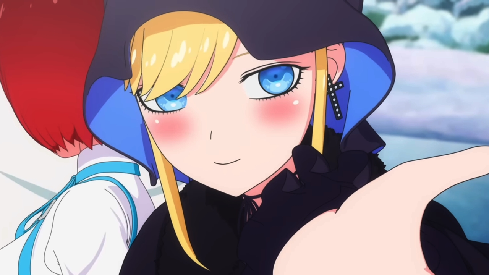

Seasonal
25 animes
on airing
Popular
Top 10 most
popular anime
Así luce y se ofrece el Blu-ray/DVD de Kaguya-sama: Love is War
13 Jul, 2022
La segunda parte de Chainsaw Man acumula millones de lecturas en solo un día
13 Jul, 2022
El anime Classroom of the Elite celebra su quinto aniversario
12 Jul, 2022
El manga Kanojo, Okarishimasu celebra su quinto aniversario
12 Jul, 2022
La película de Kaguya-sama: Love is War tendrá versión para televisión
11 Jul, 2022
Dragon Ball Super: Super Hero revela a la nueva voz de Gohan en español latino
11 Jul, 2022
SPY x FAMILY fue más popular que Kimetsu no Yaiba y Jujutsu Kaisen en sus inicios
11 Jul, 2022
Kaguya-sama: Love is War fue el mejor anime de Primavera-2022 según Anime Trending
11 Jul, 2022
Umaru Doma invade SPY x FAMILY en un nuevo video viral
11 Jul, 2022
Llegan críticas hacia el doblaje en inglés de Kaguya-sama: Love is War
10 Jul, 2022
El manga Isekai Shikkaku tendrá adaptación al anime
10 Jul, 2022
Kaguya y Miyuki interpretaron el opening de la primera temporada de Kaguya-sama: Love is War
10 Jul, 2022
El anime Bocchi the Rock! anuncia su fecha de estreno
10 Jul, 2022
El anime Sasaki to Miyano tendrá una película en 2023
9 Jul, 2022
La voz de Chizuru participará en el live-action de Kanojo, Okarishimasu
9 Jul, 2022

Shinigami Bocchan to Kuro Maid revela un avance para su segunda temporada
9 Jul, 2022